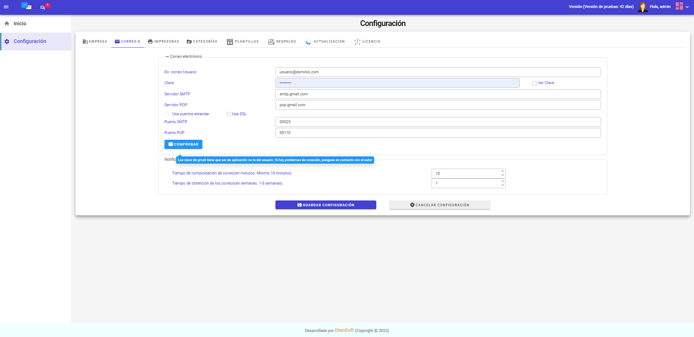
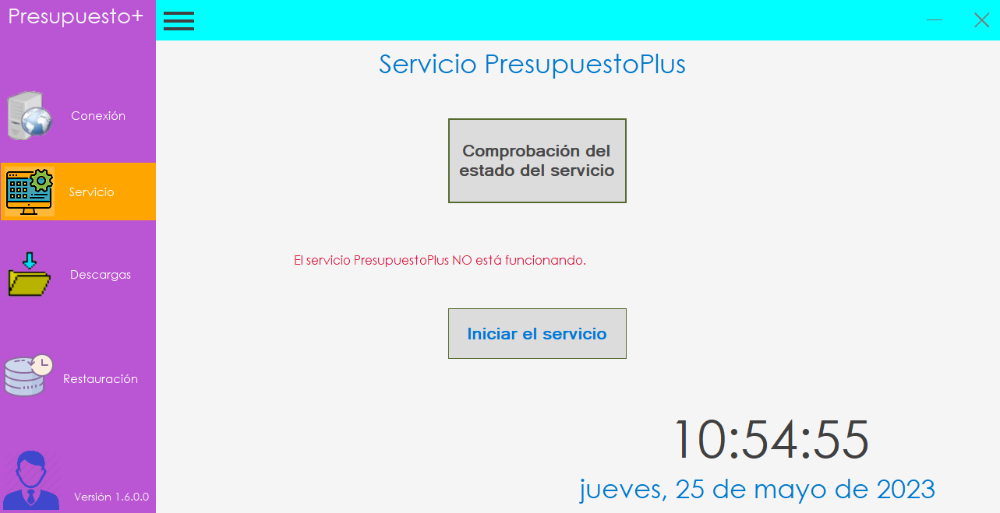

Funcionalidades de la aplicación
-
Gestión de usuarios, presupuesto, facturas, documentos, correos, respaldo de la base de datos y documentos, así como de las actualizaciones.
-
Gestión de clientes y proyectos.
-
Gestión de gremios y productos.
-
Creación y gestión de presupuestos.
-
Asociación de documentos al proyecto.
-
Gestión de facturas.
-
Lectura y envío de correos.
-
Gestión de calendario.
Aviso
PresupuestoPlus es un Software que se instala en máquinas con el Sistema Operativo Windows. No es compatible con Linux o Mac.
Inicio sesión
Para acceder a la aplicación se necesita un explorador Web como Chrome. Hay dos formas de acceder:
Diréctamente: Abriendo Chrome y escribiendo el nombre de la máquina del servidor o localhost si se esta en el equipo del servidor.
Usando el programa Cliente. Ver Cliente.
Inmediatamente aparecerá la pantalla de Inicio de sesión como aparece en la imagen siguiente:
Página de inicio
Despues de hacer el inicio de sesión aparece la siguiente pantalla con la página de inicio donde se indica algunas estadisticas de usuarios,clientes y proyectos actuales como con los nuevos clientes y proyectos durante el presente ejercicio. En la gráfica inferior se mostrará la facturación actual comparada con la del año anterior.
Superusuario
El Superusuario es un usuario que es administrado de la aplicación. No sirver para realizar presupuestos, facturación, etc. Las tareas que puede realizar son:
Configuración: Permite realizar la configuración de los distintos apartados como empresa, correo, impresora, plantillas,etc . Ver configuración mas adelante.
Usuarios : Permite dar de alta los usuarios y los roles que van a usar el aplicativo.
Limpieza Base Datos: Con los años se van añadiendo cada vez mas informacion a la base de datos. En la configuración se debe especificar el nº de años que puede estar la información disponible hasta un maximo de 5 años. Transcurrido ese periodo configurado habría que ir a esta opcion para realziar la limpieza pertinente.
Atención
Guarde la clave del supuerusuario para pode acceder al aplicativo. Posteriormente puede añadir mas superusuarios si es necesario.
Configuración
Cuando se inicia la aplicación la primera vez no existe configuración y aparece la siguiente pantalla:
Debe ir a la opción de configuración en el menu de la izquierda. Lo primero que aparece es la configuración de los datos de la empresa que se muestra a continuación.
Nota
Esta opción solo está disponible para el SuperUsuario que se establece en el momento de la instalación.
Empresa

Los datos a introducir son claros. Comentar que cada vez que se realiza un cambio en la configuración hay que pulsar el botón de 'Guardar Configuración' para aceptar los cambios o 'Cancelar' para desecharlos.
Correo
En esta pestaña se configura el correo de la empresa. Introduzca los datos correctos y pregunte a su proveedor de Internet si no los conoce

Impresoras
En esta pestaña se configura la impresora por la que se quiere imprimir sus documentos.

Categorías
En esta pestaña se configura las categorías con las que trabaja la empresa y que permite agrupar las lineas de presupuestos y facturas en categorías.

Plantillas
En esta pestaña se configura las plantillas en Word de los documentos de presupuestos y facturas. Es totalmente configurable por medio de los campos definidos para cada plantilla tal y como se muestra en la siguiente imagen:
Se puede descargar ejemplos básicos de las plantillas para tener una base de cómo configurar los documentos.
Si se baja mas abajo se configura las distintas plantillas de correo tal y como se muestra en la siguiente imagen:
Respaldo
En esta pestaña permite la configuración del respaldo de la base de datos y de los documentos manejados en la aplicación. Para ello se debe indicar el volumen donde se quiere almacenar la información. Tambien se puede indicar un equipo remoto que se configura con el cliente que se suministra con este aplicativo. Ver Cliente.
El periodo se puede configurar para que no se realice el respaldo lo cual no es aconsejable. Cada día, cada semana o cada mes. Configure cada día si tiene mucho trabajo diario.
Como se obserba en la imagen de abajo se puede configurar ademas los años que se requieren que la información esté vigente en la base de datos.
Está limitada a un máximo de 5 años.
Actualización
Configure la actualización para no realizarla lo cual no es aconsejable. Cuando haya algun paquete de actualización o solo informar de la misma.
Licencia
En esta pestaña se la validez de la licencia y permite subir la licencia que le envia DienSoft de acuerdo a la licencia contratada. La versión de prueba solo dispone de 15 días.
Usuarios
En esta opción se configuran los usuarios y sus roles que van a usar la aplicación. Tambien es importante añadir la direccion de correo electrónico para poder recibir y enviar correos.
Hay 3 tipos de roles en la aplicación:
-
Normal: Es un usuario que solo puede acceder a los clientes y proyectos, presupuesto,facturas,etc por él creados. Es decir, trabaja aisladamente del resto de usuarios.
-
Admin: Este usuario puede acceder a todos los clientes,proyectos,presupuestos,etc de todos los usuarios.
-
Superuser: Este usuarios sirver para realizar las configuraciones del aplicativo.
El botón de añadir usuario permitirá añadir un usuario a la lista. No podrá superar a los usuarios licenciados.
El icono del lapiz sirve para editar los datos del usuario una vez creado y el de la cesta de basura para borrar el usuario.
Nota
Esta opción solo está disponible para el SuperUsuario que se establece en el momento de la instalación.
Limpieza de la Base de Datos
Según la configuración de del periodo de retencion de los datos (5 años máximo) se podrá realizar la limpieza de la base de datos en el que se indicará los proyectos, documentos y clientes que se van a borrar si superan en fecha el periodo configurado.
Nota
Esta opción solo está disponible para el SuperUsuario que se establece en el momento de la instalación.
Clientes
Este modulo permite gestionar todos los clientes de la empresa. La información de correo es opcional pero la del telefono es obligatoria para poder comunicarte con el mismo.
Consejo
Lo primero que debe hacer para trabajar con el aplicativo es crear el cliente cuando le pide que realice un presupuesto por alguna obra o compra de productos. Despues tendrá que crear el proyecto y asociarle el cliente que le ha solicitado el presupuesto.
Proveedores
Este modulo permite gestionar todos los clientes de la empresa. La información de correo es opcional pero la del teléfono es obligatoria para poder comunicarse con el mismo.
El icono resaltado permite acceder a la web del proveedor directamente.
Gremios
Este modulo permite gestionar todos los gremios de la empresa. La información de correo es opcional pero la del teléfono es obligatoria para poder comunicarse con el mismo.
El campo de categorías sirve para seleccionar la categoría de obras a la que pertenece.
Productos
Este modulo permite gestionar todos los clientes de la empresa. La información de correo es opcional pero la del telefono es obligatoria para poder comunicarte con el mismo.
Proyectos
Módulo que gestiona los proyectos de la empresa. Cuando un usuario tiene el rol 'Normal' solo podra ver los proyectos por él creados. En este módulo se podrá añadir , editar , actualizar y borrar los distintos proyectos.
En (1) se dispone de controles para filtrar los proyectos por:
Proyectos en cursoProyectos FinalizadosProyectos rechazadosTodos los proyectos
Cuando un proyecto se crea aparece con el estado de INICIADO. A partir de ese momento ya se puede crear el presupuesto pinchando en el paso 2.
En (2) tenemos los botones(de izq. a derecha) para:
Aceptar un proyecto
Rechazar un proyecto
Finalizar un proyecto
Y los clásico botones de editar y borrar.
Para acceder a los presupuestos primero se debe seleccionar el proyecto y luego pulsar en el paso 2 (presupuestos). Tambien se puede hacer doble-click en el proyecto.
Presupuestos
Este modulo permite crear, modificar y borrar presupuestos de un proyecto para un cliente.
Documentos
Este módulo permite gestionar los documentos de un proyecto. Se puede añadir realizando un 'copy & paste' de los ficheros desde el explorer.
Cada documento se puede abrir, imprimir,enviar por correo o borrar. Cuando se abre un fichero se descarga temporalmente del servidor al cliente y aparece en la carpeta 'Download'. El programa cliente dispone de una opcion de borrado de estos documentos descargados para realizar una limpieza y no se llene de documentos descargados.
En este modulo podemos subir los ficheros asociados a los proyectos haciendo click con el ratón en el recuadro o bien mediaten 'arrastrar y soltar' desde el explorer tal y como se muestra a continuación:
También hay disposición de otros iconos para abrir el documento,enviar por correo, imprimir o borrar.
Envio por correo
Para enviar por correo un documento o varios hay que pulsar el icono de 'Enviar por correo'. Seguidamente aparece la siguiente ventana donde se puede introducir el destinatario de correo e introducir el texto del mensaje. Para enviarlo se debe pulsar el botón de 'Enviar'.
Facturas
En este apartado aparecen las facturas y su estado. Las facturas se generan a partir del presupuesto base. Por eso, el documento que hay que modificar es el presupuesto en el paso 2. Cuando se tenga listo el presupuesto y se dé por aceptado ya se podrá generar la factura.
Cuando una factura aparece pediente de generar y se pulsa el boton de Generar Factura, esa factura se da por válida y ya se la puede enviar al cliente o incluso modificar su presupuesto base en cuyo caso habrá que volver a generarla. Sin embargo, ya no se puede borrar y solo quedará cerrarla para que ingrese en la facturación. Si fuese necesario realizar una modificación posteriormente, hay 2 opciones crear una factura añadida modificando el presupuesto y seleccionando las lineas del cambio o crear una factura rectificativa pulsando el boton de Rectificar factura.
Otro tipo de factura que se puede crear es de comisiones que permite facturar a los distintos gremios que han realizado la obra como se muestra a continuación.
Calendario
Este modulo permite gestionar y anotar todos lo eventos de un usuario para un día y en un intervalo de horas. Estos eventos aparecerán en la página de inicio para que el usuario los pueda consultar. Tambien se notificará al usuario si así lo ha configurado en su interfaz o por correo indicando el mensaje y los contactos a los que quiere que llegue la notificación.
Cobros
Este modulo permite los cobros de las facturas generadas en el aplicativo. Para ello hay que seleccionar el proyecto e introducir el pago realizado de cada factura del proyecto. Se indicará también el pago pendiente de la misma.
Facturación
Este apartadopermite concer la facturación en cuso realizada por el usuario hasta la fecha de hoy.
Descarga
Este apartado permite borrar los ficheros de descarga según la configuración que se muestra a continuación
Equipo Servidor
En el equipo Servidor el programa cliente tiene dispone de los módulos de Servicio para conocer el estado del servicio y Restauración que en el caso de se haya producido algún problema en la base de datos como en el disco donde se almacena la documentación, permitirá hacer la restauración.
Servicio
Este apartado permite conocer el estado del servicio. En caso de que el servicio no esté funcionando permitirá iniciarlo.

Restauración
Este apartado permite realizar una restauración de la base de datos y de los documentos generados en el aplicativo. Se dispondrá de la restauración en caso de que se configure el respaldo para realizarlo diariamente,semanalmente o mensualmente.
Equipo Cliente ( carpeta respaldo)
En este apartado del cliente se va a poder seleccionar una carpeta donde se podra seleccionar desde la configuración del servidor para poder realizar el respaldo.
¿Hay Presupuesto Plus en la nube?
Sí por supuesto. Se dispone de una versión Web accesible desde cualquier parte del mundo. Tiene las mismas características que la Web de oficina.
La ventaja mas clara es que toda la información está en la nube por lo que se puede acceder desde cualquier ordenador o portatil con conexion a Internet. Esta versión dispone de un pequeño cliente que se instala en un ordenador de la oficina y que permite imprimir los documentos y tener un respaldo de todos los documentos generados en la nube.
Solicite una prueba a Diensoft solicitando una licencia de pruebas.